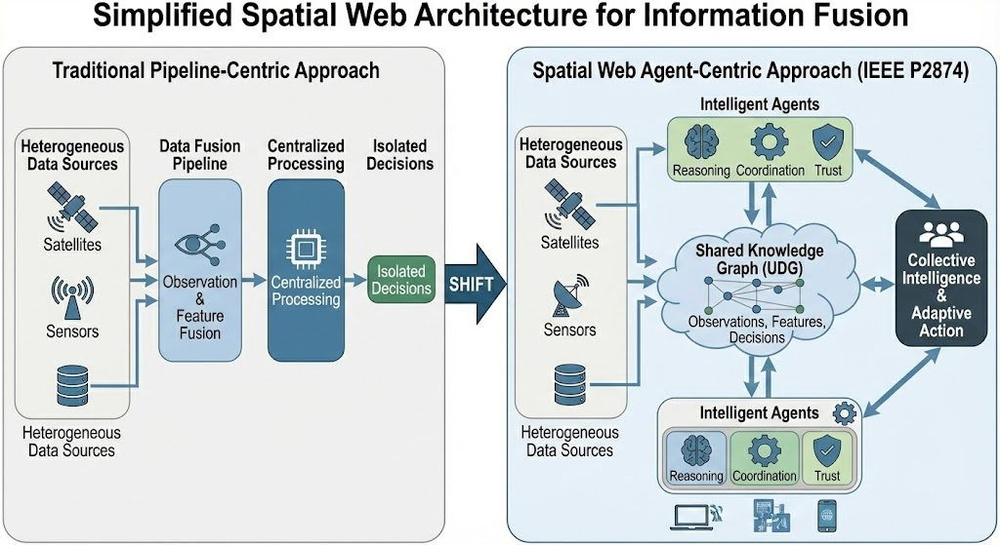
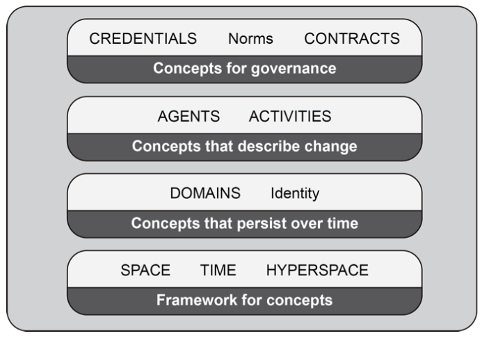
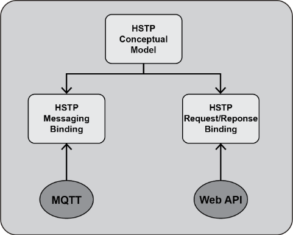
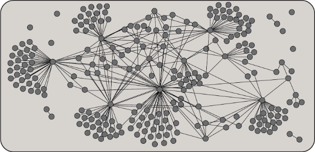

A Spatial Web architecture for unified observation, feature, and decision fusion across distributed intelligent agents — grounded in IEEE 2874-2025 and built for Earth observation systems that must reason, coordinate, and establish trust across organizational boundaries.
Information fusion is central to modern Earth observation. Integrating heterogeneous data sources into actionable knowledge is what turns sensing into decisions. Observation (sensor) fusion and feature fusion are well established within the geospatial and remote sensing communities. Decision fusion — particularly in distributed, autonomous, multi-agent environments — remains insufficiently addressed.
Existing fusion frameworks are largely pipeline-centric and centralized. That design limits their ability to support interoperable reasoning, coordination, adaptation, and trust across heterogeneous agents, platforms, and organizational boundaries. The gap is not in the sensors. It is in the framework that lets independently-owned agents share what they observe, what they conclude, and why they should be believed.
This work proposes a Spatial Web–based architecture that unifies observation, feature, and decision fusion. The approach is grounded in the IEEE Spatial Web Protocol, Architecture, and Governance Standard (IEEE 2874-2025), developed by the Spatial Web Foundation, which defines a semantic, spatial, and governance framework for interoperable interaction among network-connected entities — sensors, IoT devices, autonomous platforms, digital twins, software agents, and humans. It extends established fusion concepts from IEEE GRSS and the Open Geospatial Consortium by embedding them in an agent-centric, semantically grounded, trust-enabled spatial model.
Part 1 · Motivation
Fusion has a long history in IEEE GRSS and the wider community. Over the years the topic has expanded from data fusion to information fusion — semantically distinct and non-numeric inputs, integrated into actionable knowledge.
Mature theory and methods, developed within GRSS and the remote sensing community over decades. Multi-sensor, multi-temporal, multi-resolution combination of measurements is a solved engineering problem with a deep literature.
Benefits from cross-community semantics. Multi-modal and multi-scale features integrate within a common spatial context when they carry standardized semantic representations — the direction set out by Analysis Ready Data principles and FAIR-AI standardization.
Accelerating rapidly with AI agents — and the least supported by existing frameworks. Bringing sensing, observation, and features into a decision framework that can support or autonomously take action requires agents that can reason, coordinate, adapt, and establish trust across boundaries no pipeline was designed to cross.
Part 2 · Architecture
IEEE 2874-2025 defines a semantic, spatial, and governance framework for interoperable entities of any kind — organized, at its base, by space and time.
The foundation is an IEEE standard. IEEE 2874-2025, the Spatial Web Protocol, Architecture, and Governance Standard, was developed by the Spatial Web Foundation and approved through the IEEE Computer Society. It is deliberately general about what counts as an entity: sensors, IoT devices, EO and GIS services, digital twins, software agents, and humans all participate on the same terms.
The application of the Spatial Web to fusion extends established fusion concepts rather than replacing them — building on the IEEE GRSS fusion literature and the OGC fusion standards studies. What it adds is an agent-centric model with identity and trust built in, and a semantically grounded spatial model that covers all three fusion types across distributed intelligent agents.

Simplified Spatial Web architecture for information fusion. Left: the traditional pipeline takes heterogeneous sources through observation and feature fusion, centralized processing, and out to isolated decisions. Right: the same heterogeneous sources, but intelligent agents — each carrying reasoning, coordination, and trust capabilities — work over a shared Universal Domain Graph holding observations, features, and decisions. The result is collective intelligence and adaptive action rather than an isolated answer.
| Dimension | Pipeline-centric approach | Spatial Web agent-centric approach |
|---|---|---|
| Topology | Linear, centralized processing chain | Distributed agents over a shared knowledge graph |
| Fusion products | Isolated decisions at the pipeline terminus | Observations, features, and decisions as first-class semantic entities |
| Semantics | Implicit in code and schemas | Explicit and formal in HSML |
| Coordination | Pre-orchestrated by a single operator | Negotiated between agents via activities and contracts |
| Trust | Centralized authority; trust in the operator | DIDs and Verifiable Credentials; policy travels with the data |
| Adaptation | Requires re-engineering the pipeline | Agents re-task sensing and analysis in response to shared knowledge |
| Boundaries | Struggles across organizations | Domains carry authority, membership, and norms across organizations |
Part 3 · Components
Three components make the architecture work: a formal semantic representation, a protocol for trusted agent interaction, and a shared substrate for collective intelligence.
Semantic core
HSML provides a formal semantic representation for observations, features, activities, agents, and decisions within a shared hyperspace graph. Its conceptual model is defined in IEEE 2874. At the base of the framework sit space, time, and hyperspace. Concepts that persist over time within that framework are domains, which carry identity. Change is enacted by agents performing activities. And governance is contextual rather than top-down: credentials, norms, and contracts define what an agent may do within the domain in which it operates.
The conceptual model has been developed into a standalone modeling language on the W3C stack — RDF, RDF-star, OWL, and SPARQL. Hyperspace is the context for every entity: coordinate spaces where elements are related by paths, and discrete topological cell and graph spaces, with category theory providing the means to move between them. Entities follow a holonic model — each is both a whole in itself and potentially part of a higher domain, and may belong to several domains at once.
Fusion, in HSML, is an activity performed by agents. Observations from remote sensing platforms are modeled as spatially grounded semantic entities, so they can be consistently interpreted and reused across agents. Decision fusion becomes an agent-level process in which goals, hypotheses, actions, and outcomes are first-class semantic objects that can be exchanged, compared, and reconciled.

The HSML conceptual model. Reading upward: hyperspace frames the concepts, domains persist within it, agents and activities produce change, and credentials, norms, and contracts govern what change is permitted.

HSTP bindings. One conceptual model, multiple transport bindings — messaging (MQTT) and request/response (Web API).
Protocol
HSTP is the method for passing HSML: a secure, verifiable protocol supporting semantically validated transactions between agents. It ensures interoperability between diverse AI and digital twin systems, and its operations are based on the actor paradigm.
HSTP incorporates W3C DIDs for identity and provides the basis for the Spatial Web Domain Registration Authority. Multiple bindings are anticipated — messaging and request/response are defined today, and an MCP binding is an open question worth pursuing as agent-tooling protocols converge.
Knowledge substrate
The UDG is a shared, distributed knowledge substrate for trusted multi-agent fusion — an analogy to the World Wide Web, but of entities rather than documents. Trusted observations, features, and decisions are published, discovered, and reasoned over with provenance and accountability.
An HSML hypergraph of all entities — observations, features, and decisions — that agents can reason over as shared knowledge rather than as separate data holdings.
Domain membership and SWID registries are where authority is vested. Domains define norms and rules, issue credentials, and establish the trustworthiness of data and decisions.
Independently trained world models converge on common features — structurally and semantically isomorphic across models. The AI analog of geo-objects, needing Hyperspace Reference Systems to relate them.
Agents coordinate through activities and contracts, jointly setting sensing and analysis strategies. Collective intelligence is the emergent property of that coordination.

The UDG is heterogeneous by design. Dense clusters within domains, sparse links across them — a social network of agents rather than a uniform database.
Independently trained world models converge on common features — isomorphic not only in structure but in meaning. This is what makes World-to-Vec engineerable, and it is what lets agents fuse decisions rather than merely exchange data.
Hyperspace features · Anthropic J-space, Neuronpedia · after Goodchild's geo-objects
Part 4 · Applications
What the architecture enables for Earth observation, and where it applies.
Across heterogeneous platforms and organizations, without a central integrator.
Agents coordinate sensing and analysis strategies in response to what the shared graph already knows.
Decisions cross agent boundaries as semantic objects that can be compared and reconciled.
Cryptographic identity and credentials for agents, data sources, and individual assertions.
Tasking, tipping, and cueing across independently operated constellations and platforms.
Near real-time integration of observations, features, and decisions, where GeoAI advances already benefit from agentic coordination.
Long-horizon, multi-organization observation programs with shared provenance.
Autonomous agents integrating sensing and decisions across owners and jurisdictions.
Conclusion
Observation, feature, and decision fusion unified within a common semantic, spatial, and trust-enabled framework — shifting from pipeline-centric architectures to knowledge-driven, agent-centric models.
IEEE 2874-2025 Spatial Web, IEEE GRSS fusion frameworks, OGC standards, W3C DIDs and Verifiable Credentials, and Analysis Ready Data principles for multi-modal feature integration.
Systems spanning heterogeneous agents, platforms, and organizations, with autonomous agents capable of collective and trustworthy reasoning in complex spatial environments with real-time adaptation.
The architectural shift
Key References
Standards, fusion literature, and trust specifications underpinning the architecture.
Related Work
GeoRoundtable work on Spatial Web standards, hyperspace features, and agent architecture.
GeoRoundtable brings together expertise in geospatial standards, agentic AI, information fusion, and systems engineering. We help organizations move from centralized pipelines to trusted, agent-centric architectures.
Get in touch